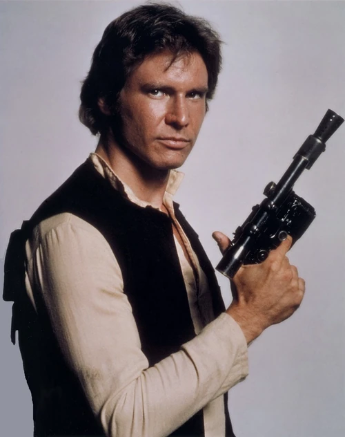
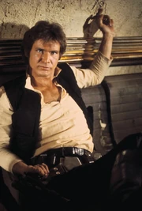
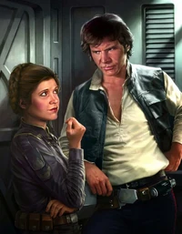

 ПХан Соло (англ. Han Solo) — знаменитый кореллианин, прославившийся на всю Галактику как участник Восстания против Галактической Империи. Родителями Хана были Джонаш и Джейна Соло, которые исчезли когда ему было не больше двух лет от роду. Его отец был принцем и потомком короля Беретрона э Соло, который установил демократический режим в Кореллианской Империи. У Хана было тяжелое детство, но он сумел порвать с прошлым и поступить на службу в Империю. Крест на своей карьере Соло поставил, когда заступился за раба-вуки Чубакку. Вместе они сбежали и со временем стали напарниками. Хан приобрел корабль «Тысячелетний сокол» и стал контрабандистом. Он заслужил славу одного из лучших в своем деле. Соло оказался втянут в Восстание, когда взял на борт своего корабля Люка Скайуокера и Оби-Вана Кеноби на Татуине. Вскоре «Сокол» был захвачен и отбуксирован в ангар Звезды Смерти − гигантской космической станции Империи, уничтожавшей целые планеты. На борту станции Хан впервые встретил принцессу Лею, которой было суждено впоследствии стать его женой. Хан Соло помог новым друзьям окончательно победить Империю и основать Новую Республику. Хан женился на Лее Органе в 8 ПБЯ. У них было трое детей. Если в Галактике случалась очередная заварушка, семья Соло всегда оказывалась в самом ее центре. К 40 ПБЯ 69-летний Хан потерял своего лучшего друга Чубакку и сыновей Энакина и Джейсена. Чуть позже Хан и Лея усыновили Аллану, дочь их сына Джейсена, которая по соображениям безопасности не могла жить с матерью Тенел Ка Дьо.
 В 10 ДБЯ Хан Соло решил сбежать с «Удачи торговца» на грузовом шаттле «Илезианская мечта» и, поднакопив деньжат на Илезии в качестве пилота, поступить в Имперскую академию. Ничто не держало Хана на корабле, кроме Дьюланны. Хан решил незаметно прокрасться на шаттл и спрятаться между контейнеров с грузом, но ему это не удалось. Гаррис Шрайк поймал его и хотел убить за непослушание, но Дьюланна помешала этому, убив как Шрайка и его брата Ларрада, так и себя. Хан не хотел умирать, бросая свою приемную мать, но Дьюланна твердила лишь, что ему не надо плакать, что он сможет убежать с корабля и начать новую, правильную жизнь. В конечном итоге, Хан Соло улетел, покинув свой, уже бывший дом навсегда. Очнувшись уже на «Илезианской мечте», шаттле, Хан сумел добраться до Илезии, несмотря на нехватку кислорода и неопытность в управлении грузовыми кораблями. Соло знал, что Илезия срочно нуждается в хороших пилотах, и был уверен в том, что сможет получить работу. Так и произошло: с помощью поддельного удостоверения личности на имя Викка Драйго, Хан Соло сумел получить работу пилота и стал работать на хаттов, в то же время, исполнив наконец свою мечту — навсегда сбежать от Гарриса Шрайка. Стоит отметить, что Илезия являлась центром паломничества, куда со всей Галактики стекались паломники, исповедавшие новую веру в Единого. На самом же деле, эта вера была придумана главой клана Бесадии хаттом Аруком. Его хитроумная афера заключалась в том, что жрецами новой веры могли быть лишь представители расы т'ланда-тиль мужского пола; они обладали специальными органами, вибрировавшими во время брачного периода и имевшими удивительное влияние на гуманоидные расы: эта вибрация доставляла им неимоверное удовольствие, доводя до состояния эйфории.
В конечном счете Соло вступил в имперскую академию, чтобы развить свои боевые и летные способности. Наставником Соло в академии был Бадур, или, как его еще называли, «воин». Муштруя свою силу воли, Хан даже заслужил прозвище «ловкач»: так все были поражены его бесстрашными маневрами на учебном истребителе Ю-33. За время учебы на Кариде Хан успел познакомиться с такими людьми как Сунтир Фел и Мако Спинс. Из стен академии его выпустили в звании лейтенанта. Однако служба Соло продлилась недолго. В 5 ДБЯ его назначили помощником коммандера Никласа, управлявшего строительными работами. Однажды лейтенант Соло стал свидетелем побега рабов-вуки из перевозившего их корабля, в котором он после обнаружил раненого вуки-пилота, Чубакку. Никлас приказал Хану добить Чуи, но тот нарушил приказ. Коммандер пообещал наказать своевольного кореллианина. Следующая встреча Хана и Чубакки состоялась на стройке имперского Зала Героев на Корусанте. Вуки напал на Никласа, но коммандер достал бластер. Вовремя вмешался Соло, оглушивший Никласа. Хан и Чуи сбежали. Соло конечно же лишили звания, а Чубакка заявил, что теперь с кореллианином его связывает долг жизни. Хан же спас вуки, чтя память Дьюланны. Бывший лейтенант долго время пытался заставить Чуи отвязаться от себя, но со временем бросил все попытки и они стали напарниками.
 Первые годы жизни Хана Соло — объект многочисленных слухов и домыслов. Соло стал предметом нескольких голофильмов, документальных фильмов и даже двух «автобиографий», чье истинное авторство все еще под вопросом. В одной из них, к примеру, говорится, что десятилетний Хан рос среди вуки и, возможно, участвовал в битве за Кашиик. Приключения со Шрайком На самом же деле маленький Хан был брошен родителями. Его подобрал главарь шайки воров Гаррис Шрайк и заставил красть и попрошайничать для него. Соло поселился на корабле Шрайка, «Удаче торговца», где познакомился с вуки Дьюланной. Шрайк использовал брошенных уличных мальчишек как попрошаек и мелких воров, а из своего корабля он сделал настоящий притон, где у каждого были свои обязанности: дети занимались попрошайничеством и карманничеством, взрослые — грабежем и рэкетом. Сидеть на улице какого-нибудь города, измазанным в грязи и с вытянутой вперед рукой, было обычным занятием для маленького Соло. Шрайк требовал от своих подчиненных беспрекословного подчинения и верности, и вскоре сколотил себе немалое состояние. Дьюланна одна на всем корабле заботилась о Хане. Именно она привила Хану любовь к культуре вуки и научила их языку. Хан с детства общался с представителями самых разных рас и планет, поэтому знал много языков, в том числе и ширивуук, хоть, не будучи вуки, и не умел на нем говорить. Вскоре Хану захотелось узнать больше о своем происхождении, о своей настоящей семье. Дьюланна поведала ему, что он принадлежит к роду Соло. Хан Соло сбежал от Гарриса на Кореллию, где нашел своих тетю и кузена: Тион и Тракана Сал-Соло. Однако родственники Хана были, мягко говоря, недружелюбны. Тетя Тион страдала слабоумием, а Тракан отличался безумной жестокостью. Кузен и сдал Соло в лапы Шрайка. Хан присоединился к пиратской шайке, которой руководили жестокие головорезы Лемо и Санда. Шрайк обнаружил, что у Хана есть способности пилота, и стал тренировать его для участия в гонках. Хан выигрывал крупные денежные призы, получал которые, конечно, Шрайк, и нажил себе смертельного врага в лице будущего наемного убийцы Денгара — во время неофициальной гонки Соло разбил его спидер. Кроме того, Шрайк не очень сильно заботился об образовании Хана, учителем которого, как и других детей на борту «Удачи торговца», был бортовой компьютер. Но молодому Соло помогала еще и Дьюланна: она давала ему уроки физики, математики и истории. Иногда Хан участвовал в особенно крупных аферах Гарриса Шрайка, играя роль ребенка из богатой семьи. Он даже под фальшивой личиной посещал школу для детей элиты Кореллии, а однажды встретил самого сенатора Гарма Бел Иблиса. Иблис запомнил смышленого мальчугана. В 17 лет Хан во время открытых соревнований «Гуманоиды без правил» на Джубиларе привлек внимание другого знаменитого наемного убийцы. Боба Фетт по поручению Джаббы Хатта издалека понаблюдал за тем, как дерется юный кореллианец. Хан выиграл состязания, но Шрайк не стал обращаться с ним лучше. Хан узнал подробнее о жизни своих родителей только достигнув совершеннолетия. их звали Джонаш Соло и Джайна Соло. Его отец был принцем и потомком короля Берфрона И Соло, который установил демократический режим в Кореллианской Империи. Хан очень долгое время скрывал факт своего королевского происхождения.